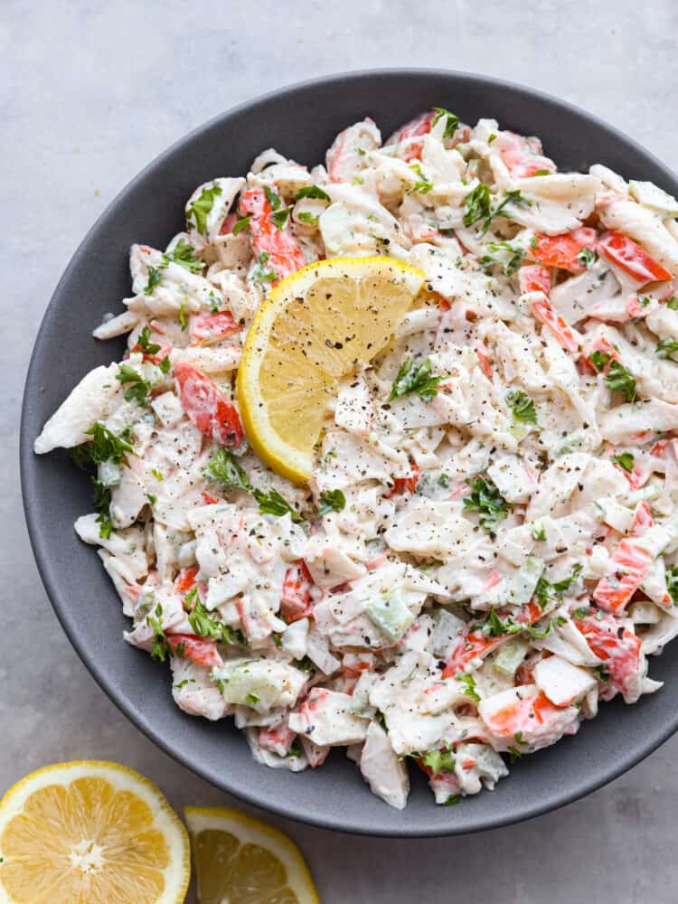

Home
Summer Crab Salad
This light seafood salad has crab meat, crunchy vegetables, and fresh herbs, all mixed in a delicious dressing.

| Prep Time: |
Servings: |
| 15 Mins |
3 |
Ingredients
Dressing
- 1 tablespoon whole-grain mustard
- 1 small garlic clove, peeled, minced and mashed
- Juice of 1 lemon
- 1/2 teaspoon kosher salt
- 1/4 teaspoon freshly ground black pepper
- 3 tablespoons olive oil
Salad
- 3 cups fresh crab meat
- 1/4 cup red bell pepper
- 1/4 cup cucumber, small dice
- 1 to 2 tablespoons red onion, minced
- 1 tablespoon fresh basil, minced
- 1 tablespoon fresh parsley, minced
- 1 tablespoon fresh mint, minced
Instructions
- Prepare the Dressing:In a small bowl, whisk together the whole-grain mustard, minced garlic, lemon zest, lemon juice, salt, pepper, sugar, and olive oil until fully combined.
-
Mix the Salad:In a large mixing bowl, add the crab meat, diced bell pepper, cucumber, corn, red onion, basil, parsley and mint.
-
Combine: Pour the dressing over the salad ingredients and gently toss until everything is evenly coated. Refrigerate until ready to serve.
-
To Serve: Pile onto crostini, mix with fresh greens, or serve as a light entrée with crusty bread. Enjoy!